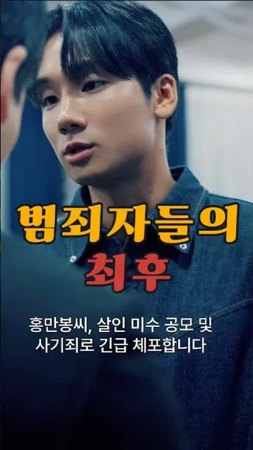
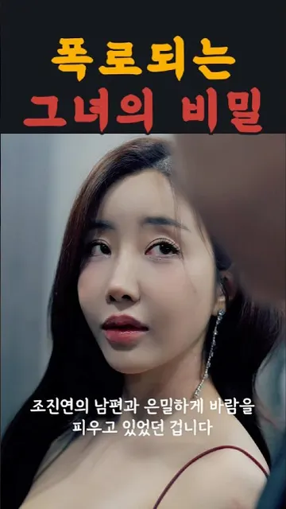
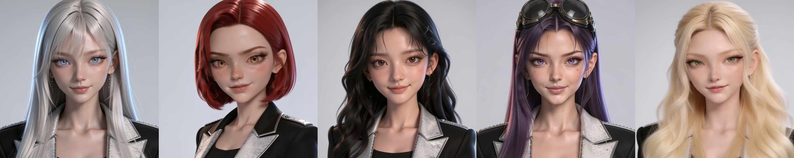
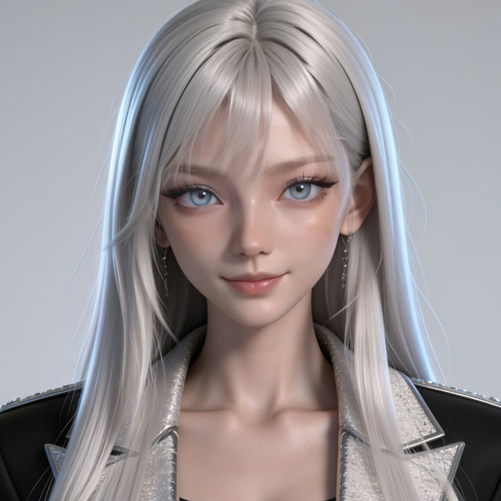
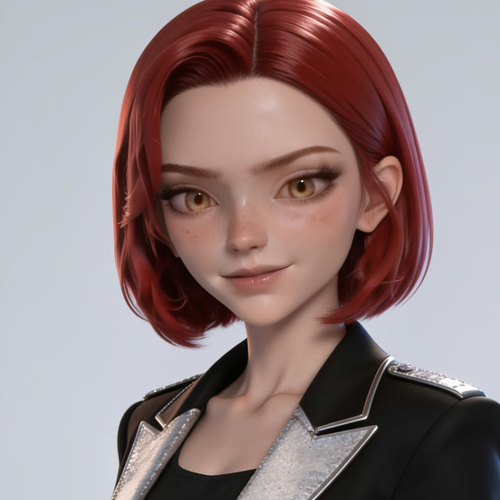
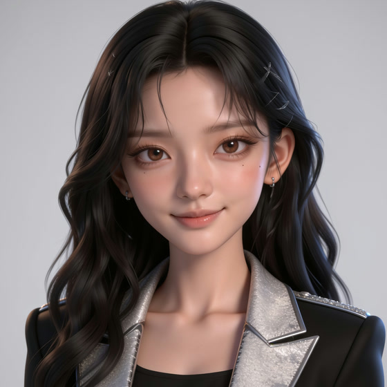
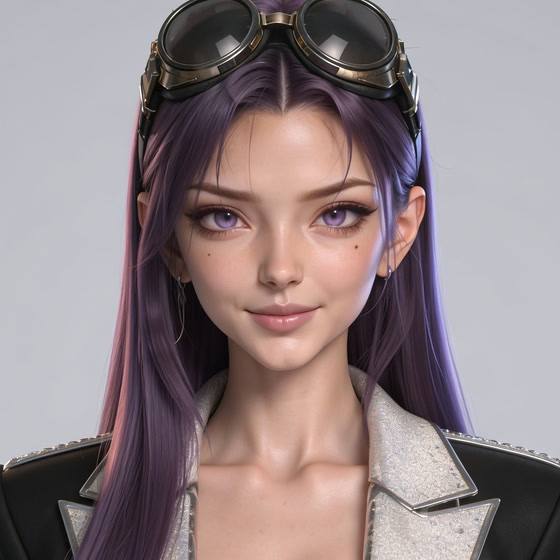
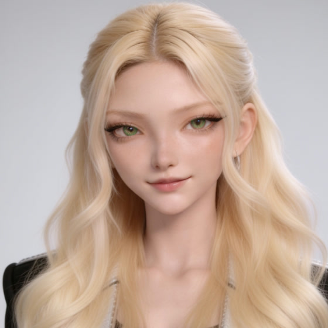

AI-generatedNow airing
썸 or 갑 Some or Boss
A 75-episode office romance (GL), produced entirely with generative AI. Twelve episodes live on YouTube Shorts.
Watch the Shorts →
AI vertical drama studio · Seoul
KISERAMA writes, casts and renders serialized vertical drama with generative AI — and ships it to YouTube Shorts, Reels and TikTok, one minute at a time.
115 scripts. 0 cameras.
By the numbers · as of Sept 2026
AI-generatedNow airing
A 75-episode office romance (GL), produced entirely with generative AI. Twelve episodes live on YouTube Shorts.
Watch the Shorts →

Live-actionCompleted
A chaebol revenge melodrama. 36 Reels drew about 1.1M views on Instagram; three original OST singles released.
Watch with English subs →
Pre-debutAI idol
Five AI idol members and original music, starting with the debut single “Glow Connection” — built on the same character-locking pipeline as our dramas.
Meet the members →Artists
AI ARTIST · Everyone here is a virtual artist created with generative AI
These five do not exist. Yet the acting, the voice and the continuity of the face are held across every episode — the same person returning with the same face. That is why we call them actors.
Actor
Makes you laugh, then makes it hurt. The drop is his instrument.
Actor
Opens cold, then breaks in the final frame.
Actor
Disarms the audience in the very first cut.
Actor
Works on Korean and Vietnamese sets without an interpreter.
Singer · Actor
Keeps a face he shows only on stage.
AI girl group
AI ARTIST · All five members are virtual artists created with generative AI
The emotion was erased. The feeling remained.

Leader
from “say” — the one who speaks first
Every stage begins with SEI’s first word.

Dancer
Korean for “butterfly” — and she dances like one
One leap, and the stage gets wider.

Vocalist · Center
“mine” — a voice that holds you close
A voice whose warmth outlasts the song.

Rapper
short and solid
Short and solid — one line changes the air.

Visual
bright and radiant
The face the camera finds first.
Disclosure — Everyone on this page is a virtual being created with generative AI and bears no relation to any real person. Birth years, heights and skills are character settings; we list no education or awards. Our videos carry YouTube’s AI-content disclosure.
Pipeline
Every episode script is decomposed into timed shots — 873 shots across 115 scripts, 5,246 seconds in total.
8 characters and 29 sets are registered as reference elements, so faces and places stay consistent across the whole season.
Shots are rendered with Seedance 2.5 omni-reference. Next step: moving from a single-slot consumer plan to parallel API generation.
Automated assembly, subtitles, audio normalization and quality checks — then straight to Shorts, Reels and TikTok.
Company
A content company founded in Seoul in September 2025, led by producers with twenty years in K-pop production (Girl's Day, KARA, Rainbow credits) and registered as a music & video production business. KISERAMA Inc. is the English name of 주식회사 기세등등.